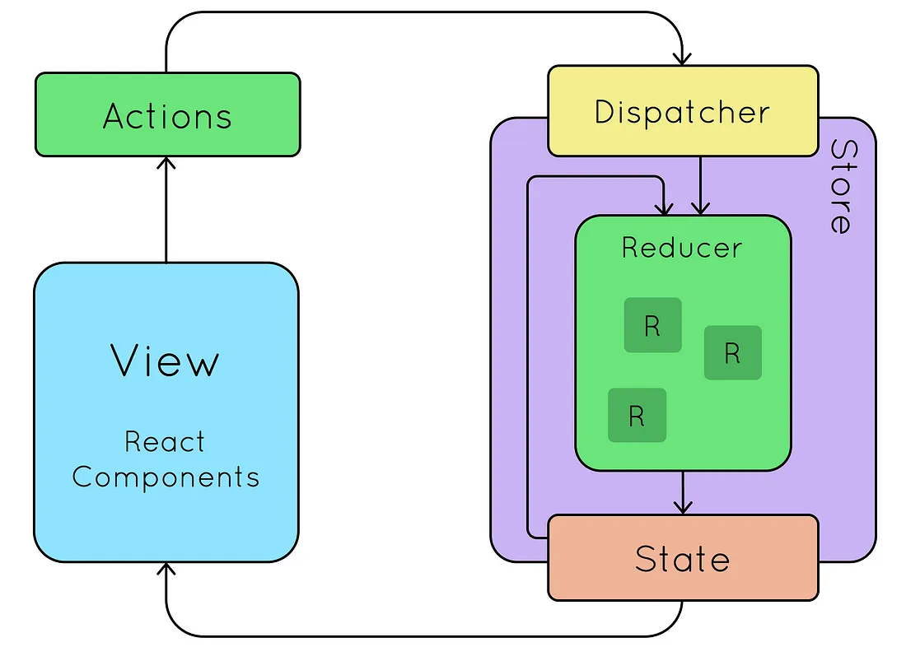

Introduction
What is Version Control? (With a Real-World Example)
Consider that you and your buddies are writing a book. You each write a distinct chapter, but occasionally errors occur and you have to go back to a previous draft. You risk losing crucial content or producing contradictory versions if you don't have a mechanism to monitor changes. Version Control Systems (VCS) are useful in this situation. A VCS allows developers to track changes, collaborate, and revert to previous versions if something goes wrong. It acts like a "time machine" for code, ensuring no progress is lost. Also on top of that imagine having a copy of that book each time your friend makes a change.
Full Stack Development Without Redux

- UI Event:In our UI which is our front end. User triggers soe events. Such as hovering, clicking on buttons, scrolling etc. But they are non-Functional if they don't have a place. if the logic is not written in the backend. For those backend functionality to be called, we need API.
- API Call via axios:Axios is a popular JavaScript library used for making HTTP requests in web applications. It is built on top of XMLHttpRequest and supports Promises, making asynchronous data fetching easier.
Uses .get(), .post(), .put(), .delete(), etc., for straightforward HTTP requests. - Backend Processing:The backend of a web application is the server-side part responsible for processing requests, handling business logic, managing databases, and ensuring security.
How API Interacts with the Database:
Clients request:The frontend sends an HTTP request (GET, POST, PUT, DELETE) using Axios or Fetch.
- Express.js Route Handling:
The request is received by an Express.js route.
- Database Query Execution:
The backend queries a database (MongoDB, PostgreSQL, etc.) using an ORM like Mongoose or Sequelize.
- API Response:
The database processes the query and returns data to the API.
- State Update:
The UI updates based on the received data, either through Redux or component state.
Full Stack Development With Redux
How It Works
Redux provides a global state management solution that centralizes state updates and ensures consistency across the application. The workflow involves:
- UI Event: A user interaction triggers an action.
- Dispatching Action: The action is dispatched to Redux.
- Thunk Middleware (Optional): If asynchronous actions are involved (e.g., API calls), Redux Thunk processes them.
- API Request & Response: The backend processes the request and returns a response.
- Redux Store Update: The response is stored in Redux, and relevant components re-render based on the new state.
- UI Updates: The updated state reflects in the UI without direct component state manipulation.
Implementing a Full Stack App with Redux
1. Setting Up Redux in the Frontend
npm install redux react-redux redux-thunk
2. Creating a Redux Store
import { createStore, applyMiddleware } from 'redux';
import thunk from 'redux-thunk';
import rootReducer from './reducers';
const store = createStore(rootReducer, applyMiddleware(thunk));
export default store;
3. Defining Redux Actions
export const fetchUsers = () => async (dispatch) => {
try {
const response = await fetch('/api/users');
const data = await response.json();
dispatch({ type: 'FETCH_USERS_SUCCESS', payload: data });
} catch (error) {
dispatch({ type: 'FETCH_USERS_ERROR', payload: error });
}
};
4. Handling State in a Reducer
const initialState = { users: [], error: null };
export const userReducer = (state = initialState, action) => {
switch (action.type) {
case 'FETCH_USERS_SUCCESS':
return { ...state, users: action.payload };
case 'FETCH_USERS_ERROR':
return { ...state, error: action.payload };
default:
return state;
}
};
5. Connecting Redux to React Components
import { useSelector, useDispatch } from 'react-redux';
import { fetchUsers } from '../actions/userActions';
const UserList = () => {
const dispatch = useDispatch();
const users = useSelector((state) => state.users);
useEffect(() => {
dispatch(fetchUsers());
}, [dispatch]);
return (
<div>
{users.map(user => <p key={user.id}>{user.name}</p>)}
</div>
);
};
Learning Resources
There are many great resources for learning web development:
- Online platforms like freeCodeCamp, Codecademy, and MDN Web Docs
- YouTube tutorials
- Books like "HTML and CSS: Design and Build Websites" by Jon Duckett
- Local coding bootcamps or community college courses
Building Your First Project
The best way to learn is by doing. Start with a simple project like a personal portfolio or a blog (like this one!). Don't worry about making it perfect—focus on applying what you've learned and solving problems as they arise.
Conclusion
Web development is a journey, not a destination. The field is constantly evolving, so continuous learning is part of the process. Embrace the challenges, celebrate your victories, and don't be afraid to ask for help when you need it.
Happy coding!